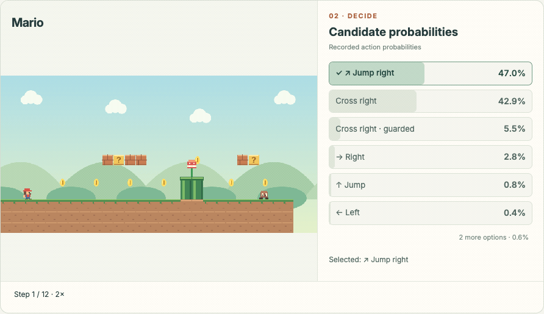
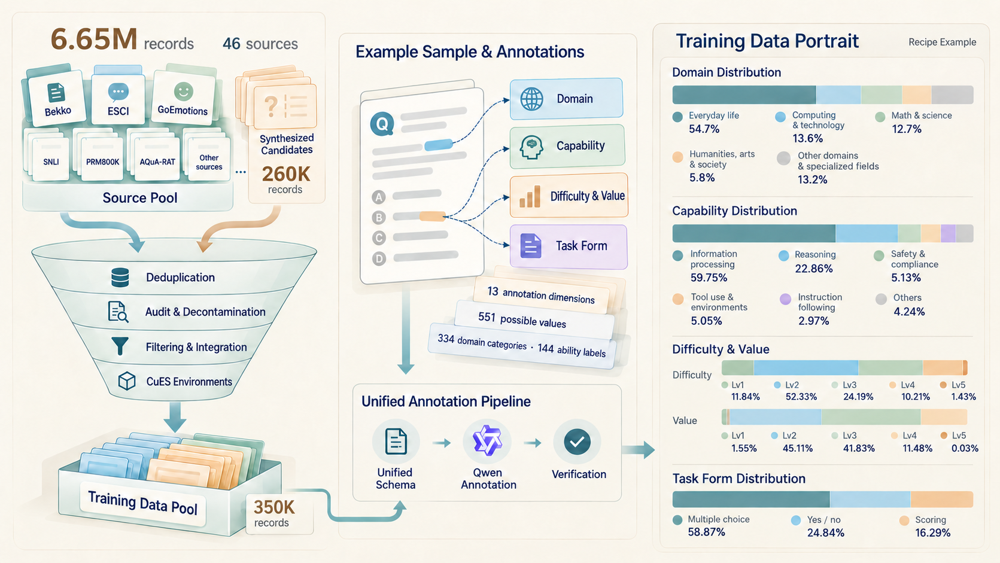
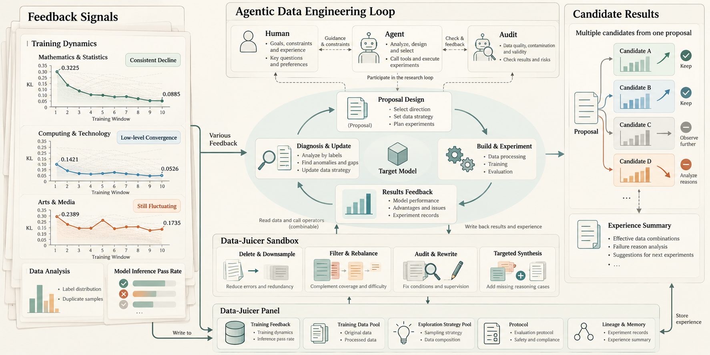
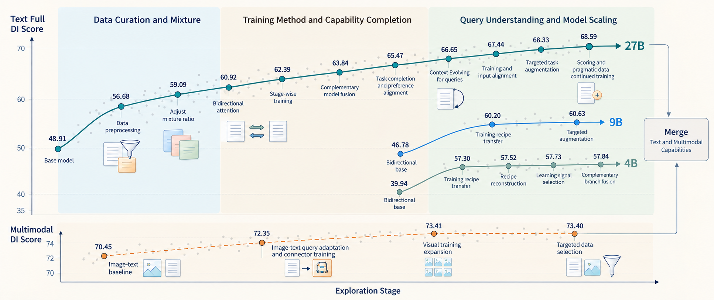

Today we release Piccolo, a family of decision models in three sizes: 27B, 9B and 4B. Piccolo-27B achieves 92.21% accuracy on JevBench Public and 68.59 on text Decision Index.
From tool review and context selection in agent harnesses, to decisions in data workflows and successive moves in games, Piccolo interprets the current state, compares candidates and returns results and probabilities that programs can use directly. To develop the Piccolo family, we designed a research framework around recursive self-improvement (RSI): research agents use model errors and training feedback to select data, test changes and choose the next experiment. This report presents Piccolo’s applications, benchmark results and development process.
See decisions at work
Across successive actions in games, execution control inside an agent harness and judgments throughout a data workflow, these three settings show how Piccolo turns the current state into decisions that programs can use.
Game · successive decisions
Nine game recordings are grouped into action, puzzle and board games. Mario tests jump timing, 2048 tests merge direction and Sokoban tests box-to-goal assignments. The 95-second Zenless Zone Zero combat recording shows the active controls alongside the character’s movements, attacks and dodges.

Harness · decide what the agent may do next
Help your agent choose the right tool, stay within its permissions and budget, and verify results before completing a task. Piccolo evaluates the task requirements and execution evidence to choose the next action; the workflow then carries out that decision.
Choose a case below to see the inputs Piccolo receives, the decision it makes and what happens next: execute a tool, request missing evidence, or pause for review.
Data · judge the next step in a workflow
Decide which records to keep, how to clean them and whether the results are ready to use or share. Piccolo evaluates the source material, quality requirements and validation results to select the next step in your data workflow.
Choose a case below to see the data Piccolo receives, the judgment it makes and the resulting action: accept or reject a record, select a processing plan, request more information, or return an output for correction.
Benchmark evaluation
Piccolo is evaluated on JevBench Public, Decision Index, HarnessJevBench Hard and DataJevBench. In the 11-model comparison updated on 2 November, Piccolo-27B achieves 92.21% on JevBench Public, 84.41% on HarnessJevBench Hard and 82.60% on DataJevBench, ranking first on all three. Its reported text Decision Index score is 68.59.
Piccolo-9B and Piccolo-4B also provide strong performance: their JevBench Public accuracies are 89.61% and 87.01%, Harness Hard accuracies are 68.81% and 62.03%, and DataJevBench accuracies are 69.40% and 70.60%. Their reported text Decision Index scores are 60.86 and 58.00, respectively. When deployment cost or GPU memory is a constraint, consider 9B and 4B first, balancing performance on the target task against resource use.
Full model comparison
Loading benchmark snapshot…
Method: Agentic Iteration
We develop Piccolo by iterating on model errors and training feedback. In each round, research agents identify judgments the model needs to improve, select or construct training examples, and run training and evaluation to test the proposed changes. The results guide the data recipe and training choices for the next round. We connect data provenance, semantic tags, per-example learning records and model performance so that agents can trace each change to the data it used and the results it produced. The best 27B model was trained on a cumulative 350,000 examples.
4.1 Data curation and supervision
We downloaded and collected 6.65 million records from the open-source community, covering classification, retrieval, mathematical reasoning, preference judgments and tool use, and curated training material from this collection. We also synthesize targeted environments and construct decision tasks from state transitions, action choices and constraints. Each source is converted into the same structure: state, questions, candidates and target distributions. Hard labels specify a definite choice; soft labels retain distributions over ratings, preferences and judgments. Both use the same training interface. Before entering the training pool, all data is deduplicated and checked for benchmark overlap, with overlapping material excluded to keep training and evaluation data separate.
Using semantic tags to connect data and capabilities
To select data, we first need to know what judgment each example teaches. We build on the Data-Juicer framework to annotate examples and group them into slices with shared characteristics. The taxonomy has 13 annotation dimensions and 551 predefined values, including 334 domain categories and 144 capability tags. It also records task type, decision relationships, difficulty, learning value and quality.
For example, computing and technology identifies a content domain, while constraint reasoning and tool applicability identify the judgments a task requires. Intersecting these tags selects focused groups of examples from broad data sources. Linking them to per-example loss, answer accuracy and experiment results lets us track how the same slice is learned by different models and at different training stages.
Figure 1 shows our data-processing workflow. Domain tags cover everyday life, computing and technology, mathematics and science, arts and humanities, and professional domains. Task formats include candidate selection, binary judgments and numerical scoring. Information processing and reasoning make up most of the capability coverage; tool and environment interaction, safety and compliance, and instruction following add other decision settings. The agent uses the distributions of domain, capability, difficulty and task format to adjust the mix, add underrepresented decision types, adjust question difficulty and retain background data that preserves existing capabilities.

Supervising candidate distributions
The main supervised training stage uses cross-entropy over candidate distributions. For a question with options, candidate scores are read at the answer position and normalized into probabilities , which are aligned with the target distribution : , .
4.2 Choosing the next experiment from feedback
Once the data is organized, research agents decide what the model should train on next and how that data should be used. Our Agentic Data Engineering system organizes this research loop: multiple agents propose plans, run experiments, analyze training and evaluation results, and revise the next recipe. Humans set the objectives, resource budgets and permitted scope of data use. Within that scope, agents diagnose problems, construct data and run experiments, while auditing checks data quality, procedures and results.
Using training dynamics to select data for further learning
The cross-entropy objective decomposes into target entropy and KL loss: . For a given target, is fixed, while measures the difference between model predictions and the target distribution. We track per-example KL loss and aggregate it by semantic tags across domains, capabilities and task types to guide data selection and recipe optimization, while distinguishing supervision types, candidate counts and data sources.
When choosing the next experiment from a data slice, we examine the level of KL divergence, how it changes during training, and which task types account for high divergence. In Figure 2, divergence declines steadily for mathematics and science, remains relatively low for computing, and fluctuates for arts and media. Differences averaged away in the overall loss suggest different experiments:
Steady decline: test how much more the model can learn. Broaden coverage around the same decision relationship, try continued training or more data, and measure whether the gains persist.
Low and stable: reduce repeated exposure. Sample fewer homogeneous templates, retain representative replay examples, and direct more training budget toward slices with further learning potential.
Persistently high divergence: check supervision before adding data. Review question conditions and answers, then use semantic retrieval, mixture adjustments or targeted synthesis to add combinations of conditions the model has yet to master.
Fluctuation or rebound: examine interactions between recipes. Compare data composition, training settings and capability changes at the corresponding stages, then vary the balance between targeted data and background replay in the next experiments.
These curves help formulate experimental hypotheses. Training and evaluation still determine whether the proposed changes work.

Turning feedback into experiments
Each experiment follows proposal design → construction and experimentation → results and feedback → diagnosis and revision. The agent specifies the target slices, data operations, training settings and comparison models, then constructs a recipe and runs training and evaluation. It compares overall and category-level results, selects branches for further exploration, and records useful practices with their conditions of use. Better-performing models become starting points for the next round, while results from other branches also inform subsequent choices.
We manage data versions, experiment configurations, model relationships and evaluation results as a connected experiment lineage. Each training run links its input data, parent model, configuration and results. We can trace a model back to its training material and upstream models, or compare a data slice across experiments. Data-processing procedures, evaluation protocols and useful practices are saved with the experiment records for later comparison and reuse.
DataJuicer-Sandbox executes the experiments by organizing data processing, training and evaluation into workflows that agents can run. Each step specifies its inputs, operation and outputs, and the steps are connected according to the experiment plan. Within the agreed data scope and evaluation definitions, agents can revise recipes, combine or modify processing operators, and adjust training strategies and evaluation implementations. On the data side, they use four main operations:
| Data operation | Processing | Intended training effect |
|---|---|---|
| Removal and downsampling | Remove erroneous and duplicate material; adjust exposure to homogeneous examples the model has already learned well. | Allocate training budget to material with more learning potential. |
| Selection and mixing | Select examples by tags, semantic similarity and learning state; combine background, targeted and replay data. | Strengthen target capabilities while preserving existing ones. |
| Auditing and rewriting | Complete conditions, correct answers, reconstruct distractors and adjust candidate positions. | Improve supervision quality and reinforce the intended decision relationships. |
| Targeted synthesis | Construct new examples around target capabilities, task mechanisms and difficulty. | Expand task coverage and create new learning opportunities. |
An experiment can combine these operations. For a high-divergence slice, an agent might review answers, retrieve related material from the existing pool and add more combinations of conditions. Training retains background replay, and evaluation checks both the target capability and existing capabilities. These results determine whether the next round continues or revises the proposal.
4.3 Model evolution
We begin Piccolo’s development with data and supervision, strengthen specific capabilities, then use the experimental results to adjust training and inference. Figure 3 groups representative results by these stages of exploration. Branches share data recipes, training insights and merged models. As we learn more about the model, data selection moves from source-level mixtures toward specific decision relationships, and training feedback informs the next experiment. The text trajectory uses full-suite text Decision Index (DI); the multimodal branch uses its corresponding image-text evaluation.

From data curation to targeted mixtures
The 27B base model starts at 48.91 full-suite DI and reaches 56.68 after initial data curation and training. The agent then adjusts the ratio of background and targeted material using semantic tags, continuing training from better-performing models to reach 59.09. Data recipes move from source-level mixtures toward selection by task coverage and model performance, while useful checkpoints provide starting points for later training.
Adapting training to the data
We also adjust how the model uses the data. Bidirectional attention lets information within the input interact, candidate supervision aligns learning with decision outputs, and staged training separates broad coverage from targeted strengthening. Representative results reach 60.92 and 62.39. Semantic retrieval, additional preference and tool-use tasks, background replay and model merging then bring results to 63.84 and into the 65-point range. Data selection becomes more specific to tool applicability, information sufficiency and candidate preferences.
Merging complementary branches
Separate branches strengthen knowledge, preferences or tool use. We select complementary models by their category-level results and merge them. One five-branch merge reaches 63.11 full-suite DI, compared with 62.78 for the best single branch at that stage. The agent retains each branch's recipe and results, so later experiments can continue training those models or reuse effective data choices.
Changing how the model reads the input
Input organization is also part of the iteration. The agent searches over the order of questions and context, question-first layouts and repeated reading, alongside data recipes and training settings. We call this exploration Context evolving. In a comparison with model weights held fixed, changes to input and inference settings raise full-suite DI from 65.05 to 66.19. Further matching training inputs, attention and targeted data produces representative results of 66.65, 67.44 and 68.33. Subsequent data selection and supplementation using per-example learning feedback reach 68.59 full-suite DI.
Reusing the process for 4B and 9B
We apply the same data-engineering process to 4B and 9B models. Under the same inference settings as the 27B model, 9B improves from its base score of 46.78 to 60.86. Recipe reconstruction, learning-signal selection and complementary branch merging raise 4B from 39.94 to 58.00. The agent uses tags and response feedback to adjust difficulty, data mixtures and replay ratios for the new model, drawing on task experience from earlier experiments.
Extending to image-text inputs
Multimodal experiments first adjust the organization of images, questions and candidates, then train the visual connector and visual capabilities. Multimodal DI improves from 70.45 to 73.41. A subsequent merge of image-text and text branches achieves 68.19 text DI and 73.03 multimodal DI in one model, showing that the two branches' capabilities can be combined.
Three lessons from the exploration
Recipes are more targeted when they specify the judgment to learn. Moving beyond broad domain coverage to slices for conditional constraints, tool applicability and candidate preferences makes it clearer which examples to add and what the model should learn.
Data, training and input organization need to be considered together. Supervision distributions, attention settings and input structure all affect candidate judgments. Coordinating them around the same decision interface helps the model use the relationships learned in training during inference.
Retain models and experiment records for the next iteration. Strong checkpoints can be trained further, complementary branches can be merged, and recipes and per-example learning records can guide new data selections. These results support the next iteration.
Built-in benchmarks
We built benchmarks for Harness, Data and Game settings to evaluate decision models in agent execution, data workflows and sequential gameplay.
HarnessJevBench
Agent harnesses are an important application for decision models. We designed HarnessJevBench to test the decisions that control an agent’s execution: which tool or resource to use, what context to retain, whether an action is authorized and whether the evidence supports completion. Each case supplies the state, evidence and rules, allowing these judgments to be examined individually. The benchmark covers six scenario categories and 29 task types, with 325 evaluation cases in total.
Piccolo-27B achieves 84.41% Hard accuracy, a macro average over 295 determinate-answer evaluation cases, and 0.2175 total variation distance from the reference distributions. It scores 96.08% on completion and evidence checks, 93.22% on permissions and trust boundaries, and 70.00% on resource allocation.
DataJevBench
We designed DataJevBench to test decisions inside data workflows: admit a record, select a processing plan, assess an artifact, check whether evidence is sufficient, verify a claim or choose the next action. A plausible summary may contain an unsupported conclusion; a complete-looking table may lack the detail needed for an analysis. The 500 tasks make these judgments explicit, with 480 choice and 20 ordered-scoring questions across six subsets.
Piccolo-27B reaches 82.60% accuracy (413/500), exceeding 80% in five subsets. Artifact quality reaches 92.50% (74/80) and information sufficiency 82.00% (82/100); workflow control reaches 91.67% (55/60). Overall ECE10 is 0.0746 and Brier is 0.2681. The repository provides the task definitions, probability metrics and full results.
GameJevArena
We use GameJevArena to evaluate decisions through their outcomes over a full game. All participants use the same game engines and legal-action interface. In direct board-game matches, each pair plays the same seeded opening twice with swapped seats. For single-player settings, models complete paired runs with the same game and seed, and their terminal results determine the comparison.
Ratings start at 1,500 for each game and update after each match. The update factor K = 32 controls the size of each rating adjustment. The overall rating is the equal-weight mean across registered games and requires full game coverage. The leaderboard separately reports match points: a win counts as 1, a draw as 0.5 and a loss as 0, divided by settled valid matches. This rate is distinct from Elo. Errors and unfinished matches remain in coverage accounting without being assigned invented outcomes.
Future directions
We will continue studying how training and evaluation feedback can guide the next experiment, while strengthening Piccolo’s cross-modal capabilities and its performance over longer decision sequences.
Improve RSI exploration efficiency
Compare experiment-selection strategies through training and evaluation cost, candidate adoption and recipe reuse to make better use of a fixed budget.
Strengthen cross-modal capabilities
Strengthen decision models’ ability to understand and jointly reason over information from text, images and other modalities.
Improve long-horizon and real-time decisions
Improve the coherence of multi-step actions and end-to-end task performance in games, computer use and browser use.
Expand System 1 primitives
Extend System 1 fast thinking beyond choice, score and noul. Develop new structured primitives, with corresponding supervision and evaluation, to broaden the model’s decision capabilities.
CONTINUE EXPLORING
See what the next choice does.
Resources & further reading
Models and project code.
Piccolo model weights.
Piccolo downloads and usage guides.
Recorded multi-step payout audit and local tool review.
Original benchmark and evaluation protocol.
The original Decision Index leaderboard.
Harness tasks, methodology and results.
Data workflow tasks and evaluation.
Organizes research agents that propose, execute and analyze data experiments.
Processing, annotation and data slices.
Organizes data processing, training and evaluation into executable experiments.
A framework for exploring environments and constructing training tasks from interactions.